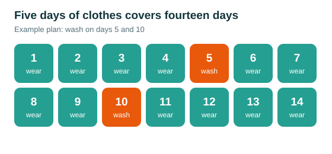

How to pack for two weeks in one carry-on bag
Two weeks in one carry-on works if you pack for five days and wash clothes twice. Most budget airlines charge more for a checked bag than a night in a hostel, so the smaller bag pays for itself.
What goes in the bag
Take five tops, two bottoms, one warm layer, one rain shell, five pairs of underwear and socks, and sandals in addition to the shoes you wear on the plane. Pick colours that all match each other.
What stays at home
Leave the hair dryer, the second pair of jeans, full-size toiletries and anything packed "just in case." Hostels and pharmacies abroad sell nearly everything you forgot.
How do you do laundry while travelling?
Wash small items in a sink with a bar of soap and hang them overnight. Every seven days or so, use a laundromat or a hostel's laundry service.
